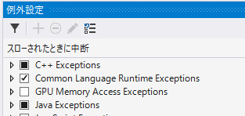
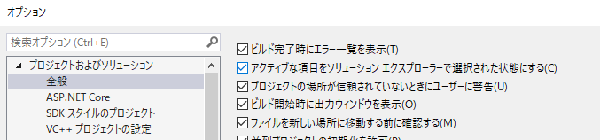
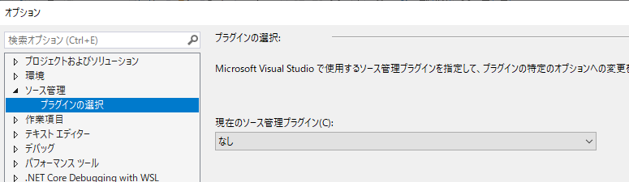
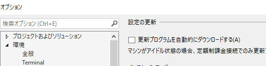
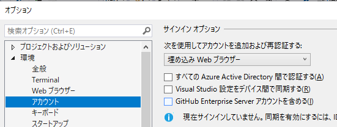
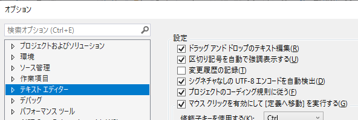
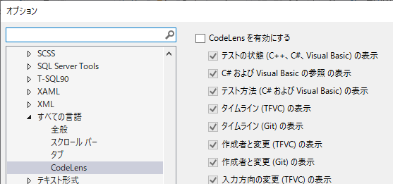

12.5. Visual Studioの設定¶
12.5.1. エラー発生場所で中断させる設定¶
「例外設定」 － 「Common Language Runtime Exeptions」にチェックする。

12.5.2. 開いているファイルをソリューションエクスプローラで選択状態にする¶
「オプション」－「アクティブな項目をソリューションエクスプローラーで選択された状態にする」にチェックする。

12.5.4. Gitの連携を無効化¶

12.5.5. 更新プログラムのチェックを無効化¶

12.5.7. アカウントの認証を無効化¶
「オプション」－「すべてのAzure Active Directory間で認証する」と「Visual Studio 設定をデバイス間で同期する」のチェックをはずす。

12.5.8. 変更履歴を非表示にする¶
「オプション」－「変更履歴の記録」のチェックをはずす。

12.5.9. CodeLensを無効にする¶
「オプション」－「CodeLens を有効にする」のチェックをはずす。
